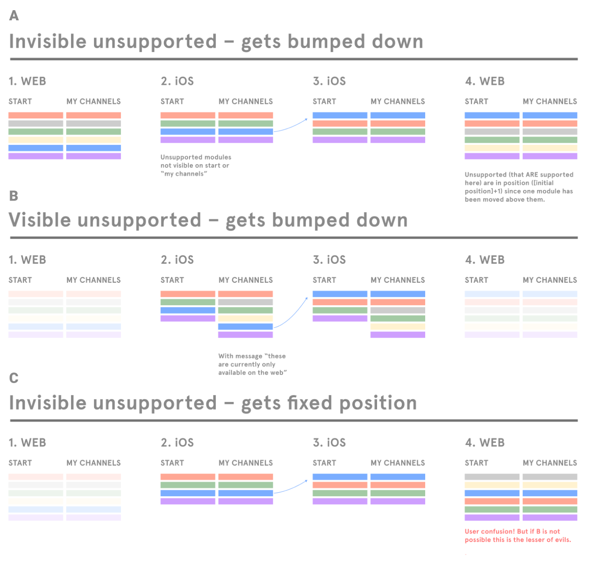
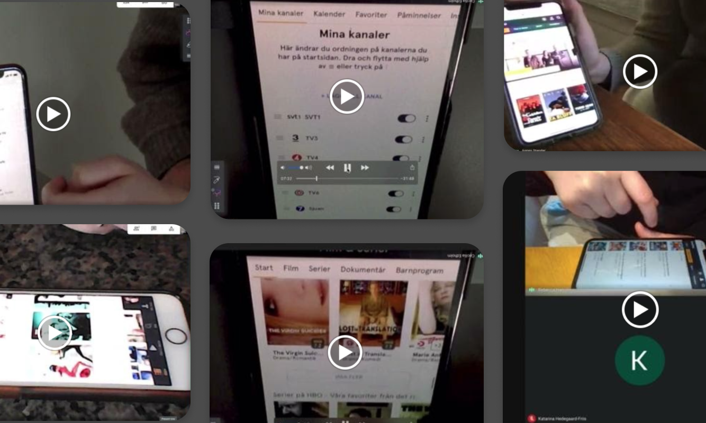
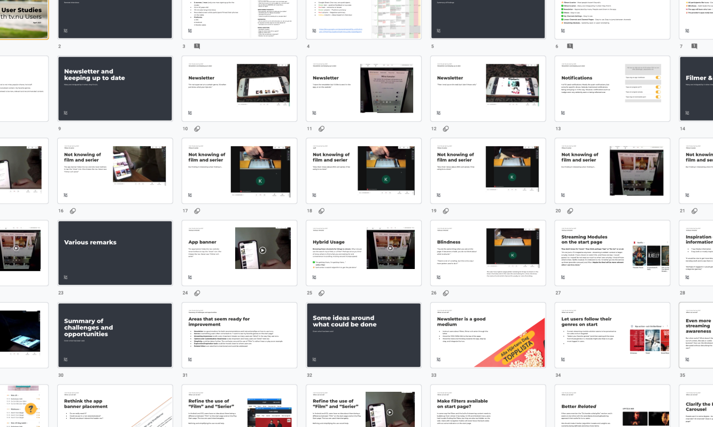
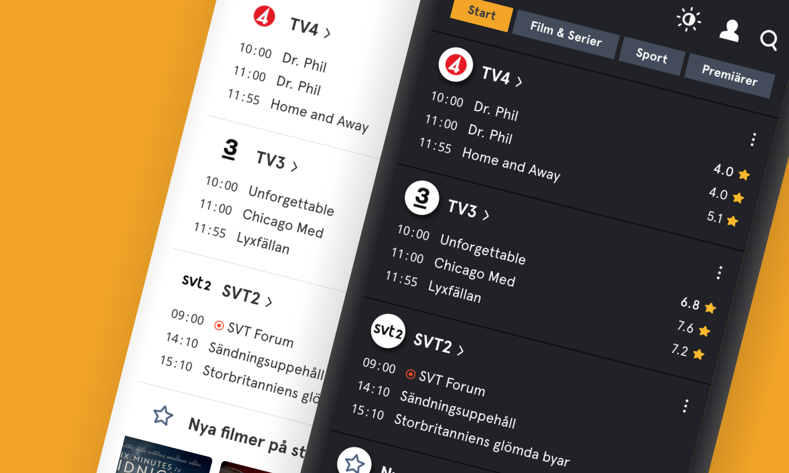

tv.nu
Strategy Overhaul
Background
tv.nu is Sweden's largest streaming and linear TV guide with 2 million unique visitors each week. It was founded in 1999 and is today running on iOS, Android and the web.
My Role at tv.nu
Throughtout all the projects at tv.nu, my role as Product design Lead was always in tight collaboration with the product owner, developers, management and the marketing team. I conducted user research and studies, facilitated workshops and brainstorms, created prototypes and specifications, taking ideas from whiteboards to implementation and following up to see what needed to be tweaked. I also managed the CSS for the web version of the app and by doing so, making sure the design was implemented correctly catering for all screens and devices. My work mostly focused on the web platform, where the design source of truth could be established as a reference for the apps as they caught up. Since tv.nu has so many – and so loyal – users it was always important to balance user needs with user expectations and to balance business and marketing goals with usability needs. Any change to the interface would stir up reactions – negative as well as positive.
Challenges
The major challenge tv.nu has been going through over the last years is trying to pivot from being a linear TV schedule to a modern streaming and TV guide that aggregates the content from all major providers and channels.
The reason for doing so was because traditional users – who visit tv.nu for the linear TV schedule – were many and loyal, but slowly decreasing in the same pace as linear TV watching in favor of streaming. A puzzling aspect of this was that while tv.nu did have streaming content – the traffic to those pages was surprisingly low.
One of the largest obstacles is pivoting without losing the brands reputation, users or identity.
As I came onboard, the laid out strategy was to hide the linear schedule in benefit of showing streaming content up front – to really promote the new path of tv.nu as a streaming guide.
Insights
After looking at the traffic in Google Analytics and learning more about the users, a few things became very clear:
tv.nu users are creatures of habit and convenience and the original features of the app has really kept their attention throughout the years – since 1999 they are used to tv.nu being only a linear TV guide and this has caused something of a brand stagnation. In addition they have become used to trying to avoid getting their attention stolen by ads – which has made their behavioral patterns even more narrow. This in turn preventing them from noticing updates and added features. So it seemed like the major task was not only to make the streaming guide useful but also to raise awareness around the fact that it was actually there!
Thus, the streaming guide sections of the app have gone by unnoticed in favor of the temporal aspects of the schedule, and this is where it got interesting.
***Knowing when a title becomes available, and which titles are new – vs knowing where to find titles***
tv.nu had always been seen as a timetable. Users expected to find out when a title could be seen, they expected to learn what's on tonight, what's new and recommended by trusted sources, whereas streaming guides often only deal with where a certain title can be seen.
The way tv.nu have presented linear TV content since 1999…
While the need of traditional linear TV was diminishing, the idea of a schedule, a guide to what's new, was still a very useful and appreciated interface.
It's true that streaming deals with availability and linear TV with air-times, but the fact remains that new streaming content will become available at a certain time so the temporal aspect is just as important for streaming as it is for linear TV.
Scrapping the laid out strategy
To back this hypothesis up, data showed that 95% of users stayed on the linear TV schedule (the start page) during their visits to the site and to the apps. So moving the schedule away from the start page would most probably make users annoyed and frustraded and have them end up in a silo, one click away – if they would stay loyal at all. Soon the initial strategy was challenged and scrapped.
The start page is all about news, but is also a gateway to all available streaming content
The new model proposed two major sections; one that honored the legacy of the appreciated timetable aspect of the app, showing upcoming shows and titles, new additions, new trailers and new recommendations – from both linear and streaming channels relevant to each user. The other being something of a library, answering the question "where can I find this and that title" as well as giving inspiration, allowing for browsing and serendipity.
Letting streming content news enter the start page feed – if the user wants it
Customizing the start page with an options button. Linear channels or streaming channels or both
So rather than hiding the schedule away, we wanted to allow users to build their own timetable with the channels they were interested in, no matter if the content was served from a linear channel or a streaming provider. In this way, both traditional linear TV watchers and people with multiple streaming services could customize the service to their own needs.
Introducing Streaming Channels
Being able to select TV channels and streaming services had been a feature in the app for some time, but as streaming was introduced as a part of the timetable, personalization became much more important.
...and to primarily let users find something interesting to watch, no matter if it was on a linear channel or from a streaming service, and to keep using the start page as it had always been used: as a place to see what is on tonight, what is new, what just came to streaming.
Just like a linear channel schedule tells the user what's happening, a streaming channel can tell the same thing.
As the streaming channels were introduced and made available as an addition to the linear channels on the start page, we immediately saw a bump in the number of opened streaming provider pages and from this point on the percentage of users being aware of tv.nu guiding to streaming started to steadily grow.
Making complex settings simple
Allowing users to customize their start feed was a crucial element of this switch. Previously the user…
 Mapping out potential happy- and unhappy paths for settings
making the settings page a reflection of the start page, with the addition of channels via a modal seemed to be the best way forward. Simply using the start page as the settings page – with drag and drop functionality – was obviously discussed but rejected as an idea since each channel would be too tall to give a good overview of the settings.
Reflecting the start screen order of channels, linear and streaming.
User studies before (with prototypes) and after the implementation of the concept were very positive. They both showed that people simply performed the settings and moved on. One aspect to improve was the clarity of the option button, as some users were too focused on the content of the start page to notice it.
A bump in opened streaming provider pages after launching the Streaming Channels on iOS
Introducing Tips Channels
right on the start page.
- Programs I follow
- New trailers
- Newly added movies or series
- Tips from the editor
Raising Awareness
A range of user interviews, conducted… showed a very interesting pattern of user blindness to new features. Being locked on target, and navigating away from ads seemed to be the general behavior of the users I interviewed… A number of ambitious projects were started to raise awareness around the fact that tv.nu was no longer just an old-fashioned TV guide.
Challenge: users used to a use pattern, not seeing it. used to ads and thus not looking.
nudge messages… attempts: a bar at the top… use logo, use typography and elements from the UI.
…from the bottom
options… as a measure… knowing how to do settings… personalize…
Mysterious Message was meant to be confusing and and attention-grabbing and provoke users to tap/click it to see what it was all about. As the user did so…
Our first experiment with this component was … addressing the issue the options button not being fully noticed – as previously mentioned.
Introducing the "Mysterious Message" to cut through the ad noise
The number of opened options modals nearly doubled as the Mysterious Message was introduced.
Making it Your Own Guide
…Letting users customize an own channel with just the shows they are interested in. A measure for success when it came to personalization was the number of logged in users, since the settings lived behind login wall.

***Watchlists, ***
Number of logged in users growing steadily and getting small bumps when new features were introduced
tv.nu
User Interface Projects
Challenges
at the start… the onset… issues with the UI… Promoting the streaming functionality was one aspect of the work, but doing so without being proud of the features – or having data to back them up – was obviously not an option.
Insight
The projects were coupled with user studies and interviews where I tested features and prototypes, often letting users try and complete certain tasks on their own devices, while I observe everything that happens on the way to the goal; hesitations, missclicks and false assumptions.
When performing studies remotely, the following three steps have
 By having users tilt their laptop screens I could see the way they interacted with the phone and the UI.
Saving time by writing findings directly into a spreadsheet. Y-axis: users, X-axis: questions. Color codings: positive and negative remarks.
 Findings presented along with video snippets as a foundation for workshops and brainstorms
We also conduced a large study with the Human Experience firm Augur, where we intervied people in their home environment, in front of their TVs and screens, to find out how they actually find content to watch. The findings let to a series of experiments that were sketched out, tested, implemented, analyzed, tweaked and taken further.
When and where do people stream? And what do they do simultaneously?
Reviews Project
The process of finding interesting streaming content… browsing…evaluating… all while being in a fairly laid back and convenience (krävande)… mood. As we found ways of enhancing …unconventional approach to the displaying of reviews. Instead of… on a detail view level, I wanted to see how much more attention the reviews would get if they were introduced on a browsing level. A placement like this could go hand in hand with the findings… Therefore we tried enhanced the existing carousel items with a side section for the review.
A somewhat unconventional way of displaying reviews
We realised measuring the number of clicks would not be useful in a sutuation like this, since reading a review could make the user go either way, getting more or less interested. So instead we decided to set up a questionnaire as we launched the feature. In it we asked whether users found the newly added reviews useful.
While the results were positive with a large majority saying they did find them useful, we also got to find out that they were fairly … spotted? – possibly due to the placement on a browsing level.
## Filter Project
...coherent across all pages and apps.... were verified with extensive user interviews.
***filters***
Feed Project
When I started working with tv.nu, streaming content was presented with hand-made collections and lists filtered by popularity.
While collections can spark a lot of interest, they are time-consuming to make and can sometimes be too subjective. Filtering by popularity alone gives a very broad and undefined set of data. So we realized there was a need to improve this presentation.
Since interviews and studies showed such high demand for convenience, we wanted to give users a way to browse content by areas of interest and by mimicking what many streaming providers do, we introduced a feed for each streaming provider, as well as a general feed covering all providers relevant to each user. By creating a tool for programmatically creating lists for each feed we
tv.nu
Graphic Design Projects

Challenges
As I came onboard the streaming guide suffered from a lot of UI challenges as it was riddled with inconsistencies, half-finished designs and was lacking many crucial elements to really inspire, inform and help users find something good to watch.
Modernizing the brand
tv.nu had just updated its logo and its use of brand colors and the UI needed to reflect this modernization. On the checklist were issues such as coherency across components as well as letting the apps speak the same brand language, reducing the number of components doing the same thing and to create a design system to simplify further implementation.
Old design on the left, new design to the right with detail pages opened in context instead of directing to new page.
minimizing the number of colors and fonts used.
minimize the number of components used for the same thing.
For illustrations I developed a somewhat whimsical, playful style to let the brand come across as friendly
Legibility
A fairly low-hanging fruit was tackling the poor legibility in headers. Previous efforts had prioritized a strict use of brand colors which rendered failing contrast tests.
By promoting a dark and rather unsaturated shade of blue that went well with the brand colors the yellow color was allowed step down from its prominent position. Instead it became prominent in a more useful way – as an signal color for selected areas.
color contrasts and defined buttons
Moving away from the old brand…
…to the new, with stronger color contrasts and more clearly defined graphic elements
Multitenancy Project
The Norwegian magazine VG needed to modernize their linear TV guide and make the same transition tv.nu and decided to team up after seeing the new design.
This turned tv.nu into a multitenancy platform that put higher demands on design and development to thighten up the overall consistency. By pinpointing the least amount of changes that were needed to express the style of each brand – we created an even more flexible design system that could cater for both.
Dark Mode Project
Dark mode had been a feature that many users asked for. Most streaming guides use a dark background as default, and they do so for a reason. The normal use case of a guide – in front of a TV, often late in the evening, after the work day is done – does not go well with a bright white screen burning the eyes. However, since tv.nu presents a lot of information in text-based lists (the linear schedules), a sudden switch from a light to a dark UI mode would not only be popular.
But to really get people to let us know how they felt, we decided to make a one-day switch to dark mode before going back to light. The online questionnaires we then posted gave a massive response of around 3500 respondents, and like we suspected light mode was prefered by the majority of the respondents, but we were surprised to see that dark mode was just slightly less popular. Almost half of the respondents prefered dark mode so we decided to use a switch component, letting users chose, instead of just turning the UI dark.
## Small Adjustments Go A Long Way
Just as an example of the level of fine adjustments needed... users not using clickout functionality... could obviously have many reasons... in no way is this a silver bullet for all cases like this but with this project we got to know what was lacking in the information for these particular users.
A/B AND TESTS
Cleaning Projects
At the start of this project the typography and color handling was in a pretty bad shape in the production code. For the color… Type: Apart from a lot of "find, review and replace", I used a simple but efficient way of pinpointing all the different instances of a specific font mixin. By setting a unique and arbitrary color to each mixin, the… hunt for stray stylings became frustration-free.